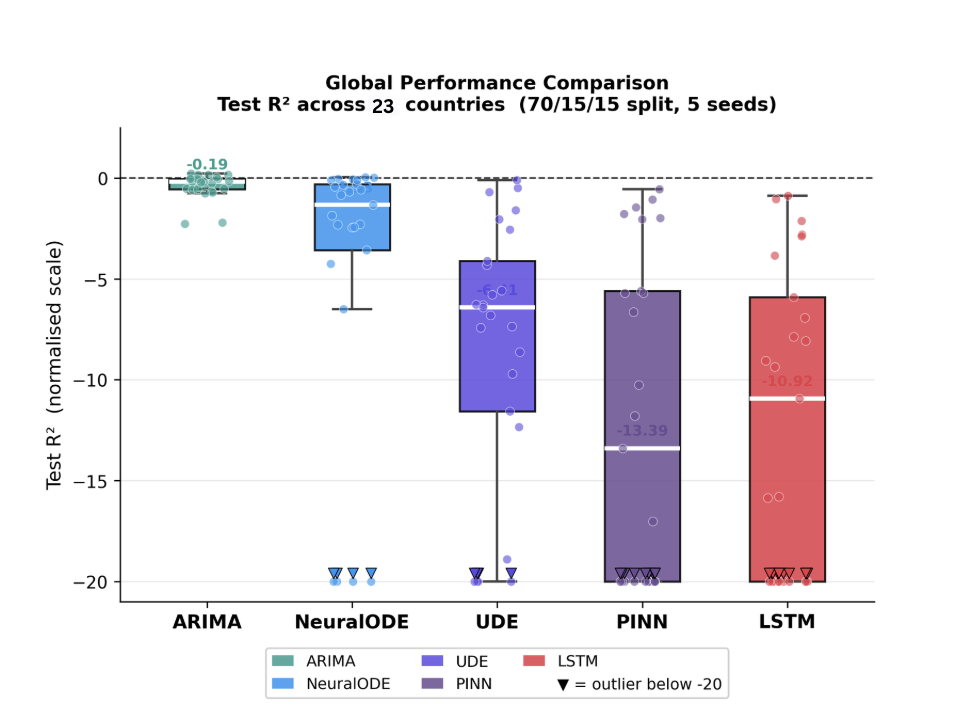
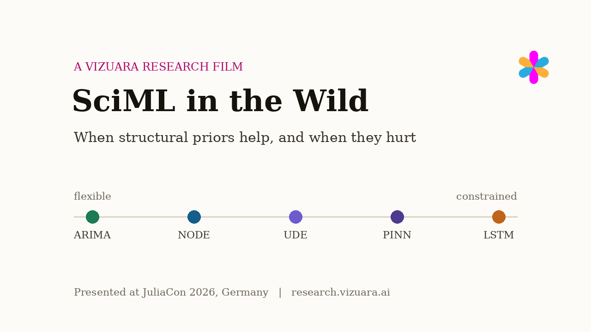

What If the Physics You Build Into a Neural Network Is Wrong?
Scientific machine learning earned its reputation in physics,
where the equations you build into a network are true. We carried the same
tools into macroeconomic forecasting, where nobody knows the equations, and
watched the hierarchy invert: across 23 countries, the more structure a model
assumed, the worse it forecast. Then we deleted the built-in physics, and the
models got better.
There is a family of machine learning methods with a beautiful trick at its
core. Instead of asking a neural network to learn everything about a system
from data alone, you hand it the part you already know. If you are modeling a
pendulum, you build in Newton's laws and let the network learn only the
friction you cannot write down. If you are modeling an epidemic, you build in
the arithmetic of infection and recovery and let the network learn the rest.
The field is called scientific machine learning, SciML for short, and the
known part you build in is called a structural prior: a piece of
structure the model is forced, or strongly encouraged, to respect.
When the prior is right, the results feel like cheating. A network that
would need thousands of examples to discover the shape of a law on its own
can lock onto it from a handful of points, because most of the answer was
installed before training began. This is why Neural Ordinary Differential
Equations, Physics-Informed Neural Networks, and Universal Differential
Equations, the three workhorses of SciML and all defined in plain words
below, have racked up success after success in physics, biology, and
engineering. One diagram shows both the superpower and its shadow, so it is
worth thirty seconds before we go on.
The same sparse data, two priors. Left: the dashed curve
is a prior that happens to match the truth, and the fitted curve locks onto
it, ignoring the noise. Right: the same data with a wrong prior. The penalty
pulls the fit away from what the points are plainly saying, and the arrows
show the pull. A prior is not a neutral hint. It is a force, and it acts
whether or not it points the right way. Illustrative sketch, drawn to make
the mechanism visible; every later figure uses the paper's real numbers.
Every success story shares one hidden assumption
Look closely at any SciML triumph and you find the same quiet precondition:
the structure that was built in was true. The pendulum really does
obey Newton. The epidemic really does follow the infection arithmetic. In
those domains the governing equations are known, stable, and well tested, so
constraining a model to respect them can only help.
But the method itself does not check the assumption. The training loss
will enforce a wrong equation exactly as diligently as a right one. So a
simple and slightly uncomfortable question follows: what happens to these
methods in a domain where the governing equations are unknown, unstable, or
simply do not exist in any fixed form? Does the prior become useless, which
would be forgivable, or does it become actively harmful?
That is the question this paper set out to answer, not with an anecdote
but with a controlled, 23-country measurement.
The economy is the perfect trap for a physics prior
To stress-test a physics prior, you want a domain that looks like physics
from a distance and behaves nothing like it up close. Macroeconomics is
exactly that. It has state variables, conservation-like relationships, and
quantities that evolve in time, so it is easy to write plausible equations
about it. And it is shaped by human behavior, institutional decisions, wars,
pandemics, and policy shocks, so those plausible equations are routinely
wrong. The dynamics drift, jump, and change regime without warning.
The data is also brutally scarce, which matters because scarcity is
precisely when a prior is supposed to earn its keep. We assembled annual
series for 23 countries from the World Bank's World Development Indicators
and the IMF's databases, covering either 1990 to 2024 or, where available,
1960 to 2024. That is 35 to 65 observations per country. Not thirty-five
thousand. Thirty-five.
For each country, each year is summarized by a five-number state: GDP in
current US dollars, real GDP growth in percent, inflation in percent,
government debt as a share of GDP, and external debt in US dollars. Together
these capture scale, momentum, prices, fiscal stress, and external
vulnerability. The forecasting task is one step ahead: given this year's
five numbers, predict next year's.
23
countries, from Japan and Italy to Nigeria and Peru
5
indicators per country per year
35 to 65
annual observations per country, total
1
year ahead: the forecast horizon
One design decision deserves emphasis, because the whole interpretation
rests on it. The structural priors used in this study are deliberately
heuristic: simplified, plausible-sounding relationships such as
"debt drags on growth" or "growth reverts to its mean", not equations derived
from formal economic theory like DSGE or RBC models. That is the point. The
paper is not asking whether economists' best theories forecast well. It is
asking what generic imposed structure does to learning when nobody can
certify the structure is right, which is the situation most practitioners
are actually in when they carry SciML outside physics.
Five model families, one dial from flexible to constrained
The experiment compares five model families that differ, above all, in how
much structure they assume. Picture them on a dial that runs from "assume
nothing about economics" to "enforce assumed economics everywhere".
The structure dial. Left of the dial, models bring no
economic assumptions: ARIMA extrapolates from recent values, the LSTM
learns patterns freely, and the Neural ODE learns its own equation of
motion without being told what it should look like. Right of the dial, the
UDE hard-codes assumed equations into its dynamics and the PINN is
penalized during training whenever its predictions disobey four assumed
economic relationships. The meters show, qualitatively, how much economics
each model has built in.
In plain words, one at a time. ARIMA(1,1,1) is the classical
statistician's baseline, fit separately to each indicator: roughly, "next
year is this year plus a nudge learned from recent changes". It assumes no
economics at all, and because it is deterministic it gives the same answer
every time you fit it. The LSTM is a recurrent neural network, a pure
pattern learner: it reads the last five years of the five-number state and
predicts the next state, with no opinion about how economies work. Two
layers, hidden size 64, and early stopping on a validation set.
The Neural ODE, or NODE, moves to continuous time. An ODE, an
ordinary differential equation, is simply a rule that says: given where the
system is now, here is the direction and speed it is moving. A Neural ODE
makes that rule a neural network:
du/dt = fθ(u)
where u is the five-number state and fθ is a small
network (two layers, 32 hidden units) that is the equation of
motion, learned from data. Note what this does and does not assume: it
assumes the economy evolves smoothly in continuous time, but it does not
assume anything about which forces act. Any dynamics the data supports, the
network can express. The model is trained with a multiple-shooting scheme,
which fits short trajectory segments and penalizes mismatches where they
join, a standard stabilizer on sparse data.
The UDE, Universal Differential Equation, is the hybrid: half
written by hand, half learned.
du/dt = fknown(u) + fθ(u)
The known part encodes the heuristic economic relationships as fixed
equations; the neural part is initialized near zero so training starts at
the hand-written system and learns only a correction to it. If the
hand-written part is roughly right, this should be the best of both worlds.
The PINN, Physics-Informed Neural Network, keeps a flexible
predictor but changes the training objective:
L = Ldata + λ · Lprior
The first term is ordinary prediction error against the data. The second
is a penalty, weighted by λ, that grows whenever the model's predicted
trajectories disobey four heuristic rules: a debt-growth interaction, mean
reversion in growth, an inflation-debt coupling, and smoothness of GDP. The
rules are enforced with finite differences, that is, by checking them on the
year-to-year changes of the predicted series. The network can disobey the
rules, but it pays for it, so training is a permanent tug of war between
what the data says and what the prior insists on.
Three safeguards make the comparison trustworthy
A comparison like this is easy to get wrong, because short economic time
series leak information in quiet ways. Three safeguards are enforced
throughout, and they are worth naming because they are why the result can
be believed.
First, the split is chronological, never shuffled. Each country's
series is cut into the first 70% for training, the next 15% for validation,
and the final 15% for testing, so every model is judged strictly on years it
has never seen, in the future of everything it trained on. Two alternative
splits, 65/15/20 and 80/10/10, are run as robustness checks, and the model
hierarchy you are about to see holds in all of them.
Second, the scaling cannot peek. Because GDP in dollars and growth
in percent live on wildly different scales, every feature is rescaled to the
interval 0 to 1. The catch: the scaler is fitted only on the training years,
then applied unchanged to validation and test years. Fitting it on the full
series would smuggle knowledge of future peaks into training, a classic and
surprisingly common leak. The same discipline applies to sequence windows,
which are built so no future value ever appears inside a training input, and
to hyperparameters, which are frozen before the test set is touched.
Third, chance is averaged out. Every stochastic model (LSTM, NODE,
UDE, PINN) is trained five times with five fixed random seeds, 42, 7, 123,
2024 and 999, and results are reported as mean and standard deviation across
seeds. That standard deviation turns out to be a finding in its own right,
as you will see in Section 9.
Forecast quality is scored with R², the coefficient of
determination, averaged over the five indicators. R² compares a model
against the dumbest possible rival: a flat line that just predicts the
average of the actual test values. R² of 1 is a perfect forecast.
R² of 0 means you did exactly as well as that flat line. And R²
below 0, which you should keep in mind for the next section, means your
sophisticated model did worse than predicting the average every
single year.
The honest headline first: everybody fails
Here is the result the abstract of a lesser paper might have buried:
in absolute terms, nothing works. Across all five model families and all 23
countries, most test R² values are negative. Most of these models, most
of the time, in most countries, forecast next year's economy worse than a
flat line at the mean would have.
This is not an indictment of the implementations; it is the nature of the
task. Thirty-five annual points of a noisy, regime-shifting, five-dimensional
system is close to the hardest forecasting setting there is. We report it
plainly because the interesting result is not "who forecasts well", nobody
does, but "who fails how badly, and why", where a strikingly consistent
pattern hides.
Every country, every model: 115 forecasting results.
Each dot is one country's mean test R² for one model family, from
Table 1 of the paper (70/15/15 split, mean over 5 seeds). The dashed line
at zero is the naive flat-line-at-the-mean baseline; almost everything
sits below it. The white ticks mark each family's median country. The
axis is compressed below R² = -1, and triangles at the bottom count
the catastrophes that fall below -25, such as the UDE's -11638 in Peru.
Hover any dot for the country and exact value.

The paper's own Figure 1, for the record. The same
distributions as box plots, values clipped at -20. ARIMA's median is
-0.19, NODE sits near -1, and the structured models fall away: UDE around
-6, LSTM at -10.92, PINN at -13.39.
-0.19
median test R² of ARIMA, the best of a losing field
-13.39
median test R² of the PINN, the most constrained model
-11638
the UDE's R² in Peru, the study's worst single catastrophe
But failure is ordered, and the order is the finding
Sort the wreckage and a hierarchy appears, and it is nearly the same
hierarchy in every country. We computed each model's rank, 1st through 5th,
within each country directly from the R² table you saw above. Read the
left edge of the chart below first: it is a wall of green.
Who ranks where, in all 23 countries. Each row is a
country, each column a model family, each cell that model's rank by mean
test R² in that country (1 is best). Computed from Table 1; it
reproduces the paper's Figure 6. ARIMA is first in 22 of these 23
countries, and in the paper's extended 25-country set it is first in 24 of
25. The one exception is India, where the Neural ODE wins outright. NODE
is the runner-up in most rows, while the PINN and the LSTM fight over the
bottom two positions. Hover any cell for the exact R².
Three things in that wall of color are worth saying in words. First,
ARIMA, the model with no economics, no neural network, and about three
tunable knobs, is the least-bad forecaster in 24 of 25 countries in the
paper's full set. Honesty requires a caveat here, and the paper makes it
itself: under one-step-ahead evaluation, ARIMA gets to condition each
forecast directly on the most recent observed value, a structural advantage
in short test windows. Its dominance should not be read as "use ARIMA", but
as "flexibility plus recency is very hard to beat on this data".
Second, the informative comparison is inside the neural family, where
that caveat does not apply, because the NODE, UDE, and PINN are evaluated
the same one-step-ahead way. There, the ordering is clean: the Neural ODE,
the neural model that assumes no economic structure, ranks second
in 16 countries and beats the structured PINN and UDE almost everywhere. It
is also the only model in the entire study to achieve a positive test
R² anywhere: 0.052 in India, where it wins the country outright, and
0.033 in Nigeria.
Third, the two models carrying built-in "economic physics" sink to the
bottom, joined by the data-hungry LSTM, which ranks fifth in 15 countries.
The gap is not subtle. Two countries make it concrete.
Turkey and India, close up. Exact Table 1 values, one
step ahead, mean over 5 seeds. In Turkey the ordering is a textbook
illustration of the dial: ARIMA positive at 0.231, the flexible NODE and
the UDE close behind near -0.10, the constrained PINN at -0.548, the LSTM
at -1.048. In India the Neural ODE is the only winner at +0.052 while the
PINN, whose four heuristic rules fit India's trajectory especially badly,
collapses to -171.9, so far below the axis that we can only print the
number on the bar.
The full table is below for the curious; it is the raw material for every
chart in this section. Bold marks each country's winner.
Country
ARIMA
NODE
UDE
PINN
LSTM
Delete the physics, and the models get better
At this point a skeptic should raise a hand. The PINN and the UDE are not
just "models with priors", they are particular architectures with particular
training schemes. Maybe they lose because of those engineering details, not
because of the structure they carry. The paper's answer is the cleanest
experiment in the study: an ablation. Keep everything about each model
identical, and surgically remove only the structural prior.
For the PINN, that means keeping the exact same network and training
setup and deleting only the physics penalty from the loss, setting the
λ term to zero. If the architecture were the problem, performance
should not move. Instead, the paper reports that removing the penalty
improves forecasting in the majority of countries, with the
degradation caused by the prior especially severe in Peru, Egypt, Vietnam,
and Argentina. The prior was not failing to help. It was actively hurting.
The UDE ablation runs the same logic from the other side: keep the
hand-written structural equations and delete the learned neural correction.
If the correction were learning something real about the residual dynamics,
removing it should hurt. It helps. In 18 of 23 countries the UDE forecasts
better without its neural half, with Brazil, Ukraine, and Indonesia showing
the largest damage from keeping it. Sitting on top of a misspecified
structural core, the neural correction does not repair the misspecification;
it adds fitting noise on top of it.
+
majority of countries improve when the PINN's physics penalty is deleted
18/23
countries improve when the UDE's learned neural correction is deleted
0
architectural changes made in either ablation: only the prior moved
A structural prior is a bet. In physics the bet is safe,
because the equations are true. In the wild, wrong knowledge is worse than
no knowledge: the prior does not merely fail to help, it becomes a
misregularizer that steers learning away from the data.
Four ways a wrong prior poisons a model
Why exactly does imposed structure hurt here? Reading the failures across
23 countries, the paper distills four recurring mechanisms. They are worth
internalizing, because they are diagnostic: if your domain exhibits them,
your prior deserves suspicion.
The four failure modes, animated. (1) Prior
misalignment: the assumed relationship points one way, the data points
another, and the fit is dragged between them. (2) Regime shift: the
economy jumps to a new regime, and a model built around smooth assumed
dynamics keeps predicting the old one. (3) Structural break: a crisis puts
a discontinuity in the data that a smoothness prior cannot represent, so
the model rings around it. (4) Optimization instability: the data loss and
the prior loss pull the weights in conflicting directions, so different
random seeds land in wildly different places. Sketches, drawn to make each
mechanism visible.
The fourth mode is the least obvious and has the best evidence, because
the five-seed protocol measures it directly. If training is well behaved,
five differently-seeded runs of the same model on the same country should
agree. For the unstructured models they largely do. For the hybrids they
do not: the UDE's seed-to-seed standard deviation of test R², averaged
across countries, is 134.2, nearly four times the LSTM's 35.4 and six times
the NODE's 23.1. The PINN's 17.6 looks tame in comparison, but pair it with
the PINN's catastrophic medians: it converges more consistently, to
consistently wrong answers. And ARIMA, being deterministic, sits at exactly
zero.
Optimization instability, measured. Mean seed-to-seed
standard deviation of test R² across the 23 countries, from the
paper's Figure 11. The hybrid UDE, whose loss combines hand-written
dynamics with a learned correction, is by far the least stable: its
conflicting gradients make training sensitive to initialization, with
catastrophic divergence in Peru, Brazil, and Ukraine.
Feel the misregularizer yourself
Everything above is a measurement on real data. This last figure is a
toy, clearly labeled as such, built so you can feel the central mechanism
with your own hands. We generated a short, noisy, nonstationary series with
a regime shift near the end of training, the signature of macroeconomic
data, and we fit a small flexible model to the training points while a
wrong, smooth, mean-reverting prior pulls on the fit with weight λ.
The fit and the test R² are recomputed live in your browser as you drag.
The misalignment explorer. Drag the slider. At
λ = 0 the model listens only to the training points, catches the
regime shift, and earns its best test R² on the held-out gray points.
As λ grows, the dashed prior drags the fit back toward the old
regime, and the test score decays, through zero, into the negative
territory that fills this paper's tables. Synthetic data, illustrative
only: the real models and numbers live in the sections above.
A prior is a bet, so test it
It is worth being precise about what this study does and does not claim,
because "physics-informed model loses to ARIMA" is a sentence that could be
misread in several profitable ways.
It does not claim that SciML is broken. The same methods, with true
priors, remain spectacularly effective in the domains they came from, and
nothing here touches that. It does not claim that economic theory is
useless: the priors tested were deliberately heuristic, and a
theory-derived DSGE-grade structural model is a different, untested bet. And
it does not claim that anything here forecasts economies well; Section 6
was clear that nothing does.
What it does claim, with 23 countries, three temporal splits, five seeds,
and two ablations behind it, is sharper and more useful: structure is not a
free lunch. A structural prior transfers its truth value to your model.
When the built-in equations match reality, they are the cheapest
generalization you will ever buy. When they do not, they act as a
misregularizer, biasing predictions, amplifying seed-to-seed instability,
and losing to a three-knob statistical baseline from 1970. And the only way
to know which case you are in is the experiment this paper models: ablate
the prior and check whether it was helping. Assume nothing, test the
structure. That is the whole lesson.
This work was presented at JuliaCon 2026 in Germany, and the models were
built on the Julia SciML stack whose UDE formulation the study puts under
the microscope.
The film
The whole argument in under three minutes, narrated over animations.

The film loads only when you press
play, so the page stays light.
Where this sits in prior work
Three research traditions meet in this study. Macroeconomic forecasting
has half a century of statistical machinery: ARIMA and VAR models in the
Box-Jenkins line, and the Early Warning Systems literature that tries to
read crises from indicator patterns (Kaminsky and Reinhart 1999; Berg and
Pattillo 1999). These are interpretable and battle-tested, and they struggle
with exactly the nonlinearity and regime dependence that motivate neural
approaches (Hamilton 1989). Deep forecasting brought LSTMs and, lately,
transformer-based architectures with strong results on large benchmarks
(Lim and Zohren 2021; Zeng et al. 2023), but their appetite for data sits
badly with 35 annual observations, and Makridakis et al. (2018) showed how
often simple statistical methods still win fair fights.
The third tradition is SciML itself: Neural ODEs (Chen et al. 2018),
PINNs (Raissi et al. 2019), UDEs (Rackauckas et al. 2020), and the
physics-informed machine learning program surveyed by Karniadakis et al.
(2021), a run of genuine successes in domains with known governing
equations. What was missing, and what this paper adds, is a systematic test
of the load-bearing assumption from the outside: not "do these methods work
where equations are known", but "what do their priors do where equations
are not known".
Established before this work
Classical baselines are strong and hard to beat on sparse macroeconomic series.
Deep sequence models overfit and destabilize under data scarcity and non-stationarity.
SciML with valid priors improves generalization and data efficiency in physical domains.
New here
A stress test: the first systematic 23-country evaluation of NODE, PINN, and UDE priors on macroeconomic data.
An inverted hierarchy: flexibility beats structure almost everywhere, robust across splits and seeds.
Causal ablations: deleting the physics penalty or the neural correction improves the constrained models.
A diagnostic framework: four named failure modes for priors in non-physical domains.
What this does not show
The priors are heuristic, not theory. The built-in relationships
are simplified, intuitive rules, chosen to isolate the effect of imposed
structure. A DSGE- or RBC-derived structural model might behave
differently, and this study says nothing about it.
One-step-ahead evaluation flatters ARIMA. Conditioning each
forecast on the latest observed value is a structural advantage for a
rolling statistical model over short test windows. The within-neural-family
comparison, where the finding lives, does not inherit this caveat.
Annual data only. With 35 to 65 points per country, every model
is data-starved; quarterly or monthly data could shift the balance,
especially for the LSTM.
23 countries is broad, not exhaustive. The extended set adds
Kenya and Poland, but the benchmark is still a sample of economies, and
the catastrophic outliers (Peru, Brazil, Ukraine) show how much
country-specific history matters.
R² on the normalized scale. Scores are computed on MinMax-scaled
features and averaged over five indicators, which makes countries
comparable but means a single hard indicator can dominate a mean, and
strongly negative values compress information about absolute error. The
paper's RMSE analysis complements this and preserves the same
hierarchy.
Appendix: the machinery from scratch
Everything above leans on four pieces of machinery. None of them requires
more than high-school calculus to understand, and each takes about a minute.
You do not need this section to trust the results; it is here so you can
explain them.
What an ODE is
An ordinary differential equation is a rule for motion. It does not tell
you where the system will be; it tells you, at every possible position,
which way the system moves next and how fast: du/dt, the rate of change of
the state u. Given a starting point, you recover the whole future by
following the arrows, one small step at a time. That step-by-step following
is called integration, and the RK4 solver used in the paper is just a
high-quality recipe for it.
An ODE is a field of arrows. At every point, the
equation supplies an arrow saying "move this way". Drop a starting state
anywhere and the trajectory follows the arrows. Here the rule pulls the
state toward an equilibrium, which is what "mean reversion" looks like as
an equation.
What a Neural ODE is
In a classical ODE, a scientist writes the arrow-rule by hand. A Neural
ODE replaces the hand-written rule with a neural network: du/dt =
fθ(u). The network eats the current state and outputs the
arrow. Training nudges the network's weights until the trajectories it
generates pass through the observed data points. The crucial property for
this paper: the network can represent almost any arrow field, so a Neural
ODE assumes smooth continuous-time dynamics and nothing else. It is the
"flexible" end of the continuous-time dial.
A Neural ODE learns the arrows. The rule of motion is
itself a neural network. Before training, its arrow field is meaningless
and its trajectory misses the data. Training bends the field until the
trajectory threads the observations. No economics was assumed; whatever
dynamics the data supports, the network can express.
What a physics-informed loss is
A PINN keeps the model flexible but changes what "good" means during
training. The loss, the score being minimized, becomes a sum of two terms:
how far predictions are from the data, plus λ times how badly the
predictions disobey the assumed physics. The weight λ is the volume
knob on the prior. During training, every weight update is a compromise
between the two terms, which is why a wrong prior does not just sit there
harmlessly: it pulls on every single gradient step.
Two forces on one fit. The data term pulls the curve
toward the observed points; the prior term pulls it toward obeying the
assumed rules. When the rules are true, both forces point the same way
and the prior is free accuracy. When they conflict, the fit settles
somewhere in between, which is exactly the misregularization measured in
this study.
What a UDE is
A Universal Differential Equation splits the arrow-rule into two added
parts: du/dt = fknown(u) + fθ(u). The first
part is written by hand and encodes the structure you believe; the second
is a neural network, initialized near zero, that learns a correction on
top. The design intends the best of both worlds: trusted structure plus
learned residuals. The paper's ablation shows the failure case: when
fknown is wrong, the correction network inherits a distorted
starting point and a conflicted training signal, and in 18 of 23 countries
the model does better with the correction deleted.
Hand-written core, learned correction. The orange curve
is what the hand-written equations alone predict. The blue curve adds the
learned neural correction. In physics the correction closes the small gap
to reality. Here, sitting on a misspecified core, it mostly adds noise,
which is why deleting it usually helps.
Reproduce it
Every number in this article traces to the paper or to public data. The
dataset is assembled from two open sources: the
World
Bank World Development Indicators and
IMF Data, annual series for 23
countries, 1990 to 2024 or 1960 to 2024 depending on availability, five
indicators per country: GDP (current USD), real GDP growth (%), inflation
(%), government debt (% of GDP), and external debt (USD).
split 70 / 15 / 15 chronological per country
(robustness: 65/15/20 and 80/10/10)
scaling MinMax to [0, 1], fitted on train only
seeds {42, 7, 123, 2024, 999} for LSTM, NODE, UDE, PINN
metric R2 on the normalized scale, mean over 5 features,
one-step-ahead over the test years
ARIMA (1,1,1) per indicator, rolling one-step forecasts
LSTM 2 layers, hidden 64, dropout 0.15, window L = 5,
Adam lr 8e-4, weight decay 1e-3, early stopping
NODE du/dt = f_theta(u), MLP 5-32-32-5, Tanh, RK4,
multiple shooting with continuity penalty
PINN L = L_data + lambda L_prior, 4 finite-difference
residuals (debt-growth, growth mean reversion,
inflation-debt coupling, GDP smoothness)
UDE du/dt = f_known(u) + f_theta(u), residual net
initialized near zero